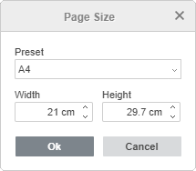
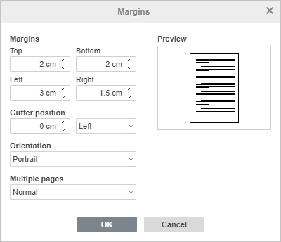
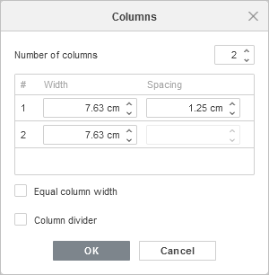

Podešavanje parametara stranice
Da biste promenili izgled stranice u Document Editor-u, odnosno podesili orijentaciju i veličinu stranice, prilagodili margine i ubacili kolone, koristite odgovarajuće ikone na kartici Layout gornje trake sa alatkama.
Napomena: svi ovi parametri primenjuju se na ceo dokument. Ako je potrebno da podesite različite margine, orijentaciju, veličinu stranice ili broj kolona za pojedinačne delove dokumenta, pogledajte ovu stranicu.
Orijentacija stranice
Promenite trenutnu orijentaciju klikom na ikonu Orientation. Podrazumevana orijentacija je Portrait, koja se može promeniti u Album.
Veličina stranice
Promenite podrazumevani format A4 klikom na ikonu Size i izborom željenog formata sa liste. Dostupne su sledeće unapred definisane veličine:
- US Pismo (21,59cm x 27,94cm)
- US Legalno (21,59cm x 35,56cm)
- A4 (21cm x 29,7cm)
- A5 (14,81cm x 20,99cm)
- B5 (17,6cm x 25,01cm)
- Koverta #10 (10,48cm x 24,13cm)
- Koverta DL (11,01cm x 22,01cm)
- Tabloid (27,94cm x 43,17cm)
- AЗ (29,7cm x 42,01cm)
- Tabloid Oversize (29,69cm x 45,72cm)
- ROC 16K (19,68cm x 27,3cm)
- Envelope Choukei 3 (12cm x 23,5cm)
- Super B/A3 (30,5cm x 48,7cm)
Takođe možete podesiti posebnu veličinu stranice izborom opcije Custom Page Size sa liste. Otvoriće se prozor Page Size u kojem ćete moći da izaberete željeni Preset (US Letter, US Legal, A4, A5, B5, Envelope #10, Envelope DL, Tabloid, A3, Tabloid Oversize, ROC 16K, Envelope Choukei 3, Super B/A3, A0, A1, A2, A6) ili da podesite prilagođene vrednosti za Width i Height. Unesite nove vrednosti u polja za unos ili prilagodite postojeće vrednosti pomoću dugmadi sa strelicama. Kada završite, kliknite na OK da biste primenili izmene.

Margine stranice
Promenite podrazumevane margine, odnosno prazan prostor između leve, desne, gornje i donje ivice stranice i teksta pasusa, klikom na ikonu Margins i izborom jednog od dostupnih unapred definisanih podešavanja: Normal, US Normal, Narrow, Moderate, Wide. Takođe možete koristiti opciju Custom Margins da biste podesili sopstvene vrednosti u prozoru Margins. Unesite potrebne vrednosti margina Top, Bottom, Left i Right u polja za unos ili prilagodite postojeće vrednosti pomoću dugmadi sa strelicama.

Gutter position se koristi za podešavanje dodatnog prostora sa leve strane dokumenta ili na njegovom vrhu. Opcija Gutter je korisna kako bi se obezbedilo da povezivanje knjige ne prekriva tekst. U okviru Margins unesite željenu poziciju žleba u polja za unos i izaberite gde će biti postavljen.
Napomena: opcija Gutter position ne može se koristiti kada je označena opcija Mirror margins.
U padajućem meniju Multiple pages izaberite opciju Mirror margins da biste podesili naspramne stranice za dvostrano štampane dokumente. Kada je ova opcija uključena, margine Left i Right postaju margine Inside i Outside.
U padajućem meniju Orientation izaberite opciju Portrait ili Landscape.
Sve primenjene izmene u dokumentu biće prikazane u prozoru Preview.
Kada završite, kliknite na OK. Prilagođene margine biće primenjene na trenutni dokument, a opcija Last Custom sa navedenim parametrima pojaviće se u listi Margins, tako da ćete moći da ih primenite i na druge dokumente.
Takođe možete ručno promeniti margine prevlačenjem granice između sivih i belih oblasti na lenjirima (sive oblasti na lenjirima označavaju margine stranice):
Boja stranice
Promenite boju stranice na kartici Layout pomoću dugmeta Page Color. Izaberite neku od Theme ili Standard boja ili kliknite na stavku More colors da biste kreirali prilagođenu boju.
Kolone
Primeni raspored sa više kolona klikom na ikonu Columns i izborom potrebnog tipa kolona iz padajuće liste. Dostupne su sledeće opcije:
- Dve – za dodavanje dve kolone iste širine,
- Tri – za dodavanje tri kolone iste širine,
- Levo – za dodavanje dve kolone: uska kolona levo i široka kolona desno,
- Desno – za dodavanje dve kolone: uska kolona desno i široka kolona levo.
Ako želite da prilagodite podešavanja kolona, izaberite opciju Custom Columns sa liste. Pojaviće se prozor Columns, u kojem ćete moći da podesite potreban Number of columns, Width kolona i Spacing. Unesite nove vrednosti u polja za unos ili prilagodite postojeće vrednosti pomoću dugmadi sa strelicama. Označite polje Equal column width da bi sve kolone imale istu širinu. Označite polje Column divider da biste dodali vertikalnu liniju između kolona. Kada završite, kliknite na OK da biste primenili izmene.

Da biste precizno odredili gde nova kolona treba da počne, postavite kursor ispred teksta koji želite da premestite u novu kolonu, kliknite na ikonu Breaks na gornjoj traci sa alatkama, a zatim izaberite opciju Insert Column Break. Tekst će biti premešten u sledeću kolonu.
Umetnuti prelomi kolona označeni su u dokumentu isprekidanom linijom: . Ako ne vidite umetnute prelome kolona, kliknite na ikonu na kartici Home na gornjoj traci sa alatkama da biste ih učinili vidljivim. Da biste uklonili prelom kolone, izaberite ga mišem i pritisnite taster Delete.
Za ručno menjanje širine i razmaka između kolona možete koristiti horizontalni lenjir.
Da biste uklonili kolone i vratili se na standardni raspored sa jednom kolonom, kliknite na ikonu Columns na gornjoj traci sa alatkama i izaberite opciju One sa liste.